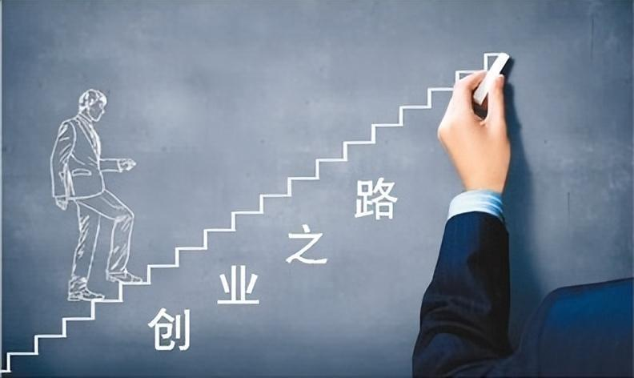

每一段成长都值得被记录，每一份坚持都值得被看见
成长从来不是一条直线，而是充满曲折与惊喜的旅程。在这里，我们收集了来自不同领域的青年成长故事，他们在学业、职场和创业的道路上，用汗水和智慧书写着属于自己的篇章。每一个故事都蕴含着真实的感悟与力量，希望能为正在路上的你带来启发与勇气。
从挂科边缘到奖学金得主，从迷茫新生到科研达人。那些在图书馆度过的深夜，那些攻克难题后的喜悦，都是学业成长路上最珍贵的勋章。
从实习小白到独当一面，从求职焦虑到职场达人。每一次面试的紧张，每一份offer的惊喜，都是职场成长中不可磨灭的印记。

从零开始到初见成效，从失败跌倒到重新出发。创业路上的每一次抉择、每一回坚持，都铸就了最坚韧的成长底色。